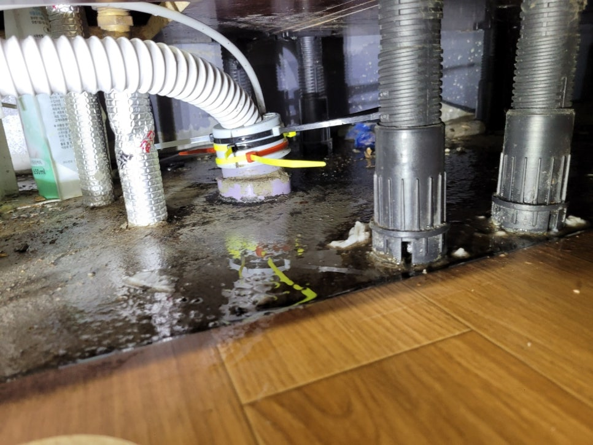
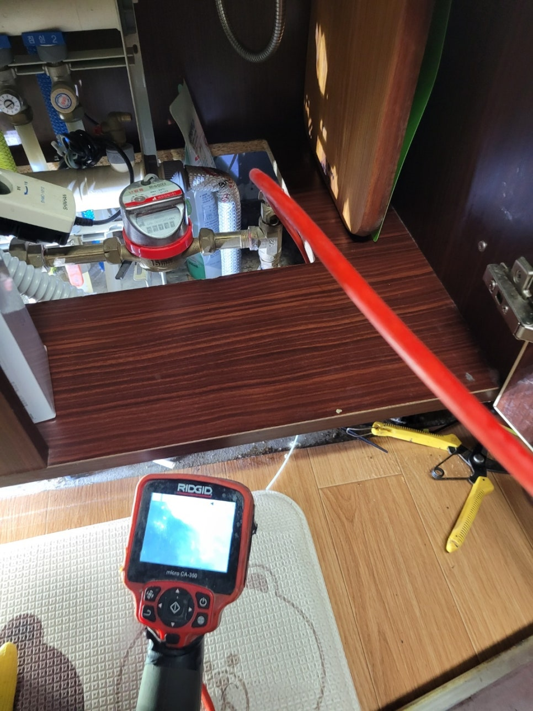
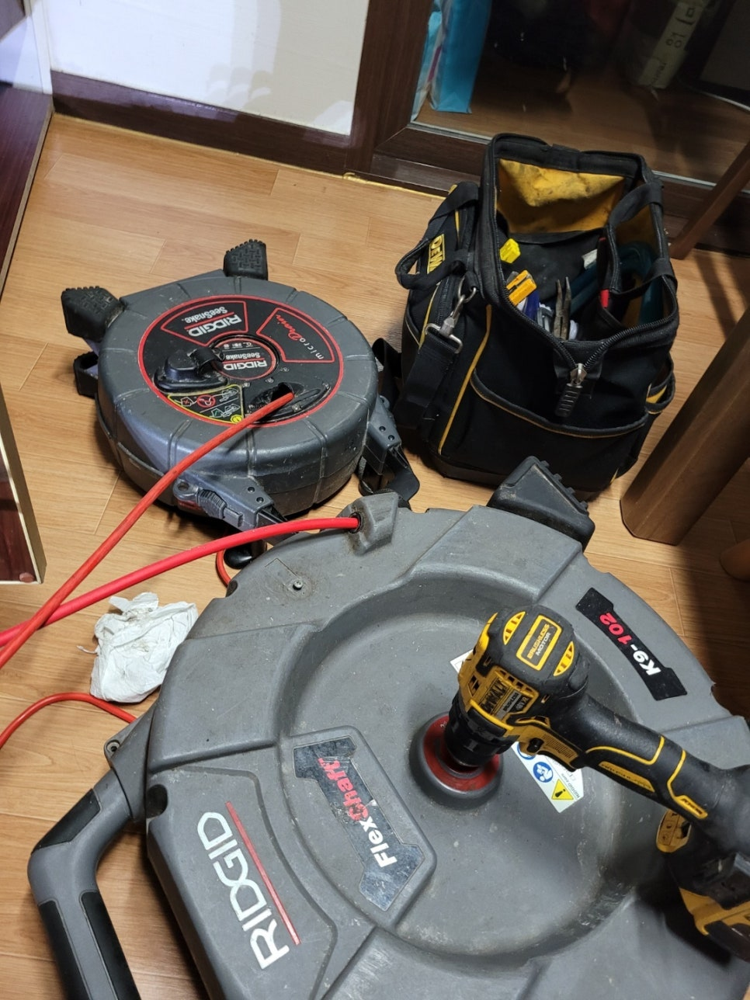
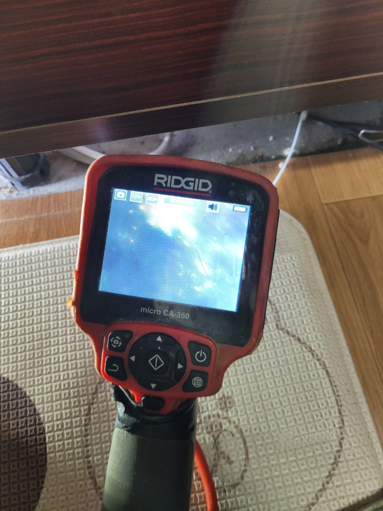
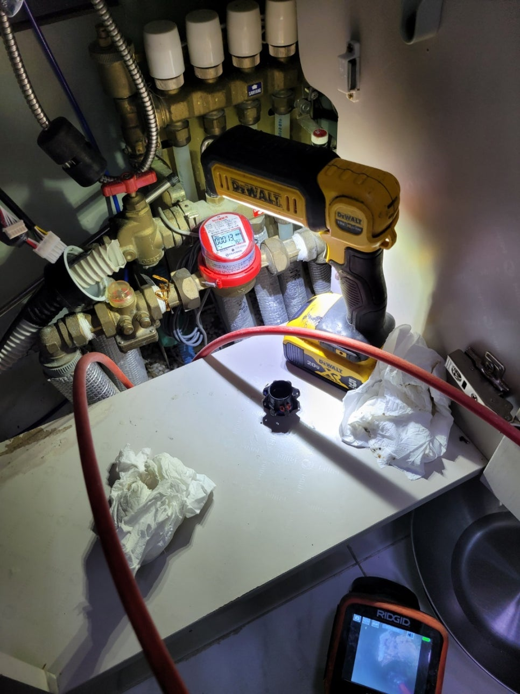

🏠 안녕동 싱크대 막힘 화성 반송동 하수구 막혔을 때 뚫어주는 설비 업체
화성 반송동 싱크대막힘 전문 시공 후기

📋 작업 개요
- 위치: 화성 반송동, 반송동, 화성
- 서비스 유형: 싱크대막힘, 하수구막힘, 배관막힘, 역류해결, 뚫는업체, 고압세척
- 작업 일시: 2025. 8. 11. 10:20
- 업체명: 하수구수사대 (010-5615-2118)
🔍 문제 상황
안녕하세요 하수구수사대입니다.
우리가 생활을 하는 일상속에서 물을 사용을 하는 공간은 너무나 많다고 할 수 있습니다. 그 중에서도 주부님들 같은 경우에 가장 많이 사용을 하는 공간이 바로 주방의 싱크대라고 할 수 있는데요 평소에 음식물을 관리를 잘 한다고 하더라도 하수구 배관이 막히게 되는 경우는 언제든지 발생을 할 수 있는 것입니다.
이번에 문의를 주신 고객님의 경우도 싱크대에서 어느 날부터 물이 제대로 배수가 되지 않게 되면서 불편함으로 인해 연락을 주신 곳이었습니다. 화성시 동탄 반송동 싱크대하수구막힘 역류해결을 한 현장의 후기를 통해서 배관 막힘의 상황을 어떻게 해결을 하게 되는지를 알려드리도록 하겠습니다.

🔎 원인 분석
💡 전문가 진단: 이번에 방문한 화성시 동탄 반송동 싱크대하수구막힘 역류해결 현장의 경우에는
이번에 방문한 화성시 동탄 반송동 싱크대하수구막힘 역류해결 현장의 경우에는
평소에도 조금씩 싱크대의 물이 내려가는 속도가 느려지고 있는 상황이었지만 대수롭지 않게 여기고 시간을 보내셨다고 합니다. 그러다 조금씩 문제가 심각해지기 시작하면서 막힘과 함께 역류까지 발생을 하는 상황에 놓이게 되었는데요
싱크대를 사용할 수 없는 것이다보니 빠른 해결이 필요한 상황이었습니다. 그래서 빠르게 현장을 도착을 해서 도움을 드리고자 하였는데요 보통 배수관의 경우에 외관상으로 보기에는 별다른 문제가 없어보이는 경우가 많지만 실상 배관 내부의 상황은 전혀 반대라고 할 수 있습니다.
배관 전용 내시경을 이용해서 배관의 내부를 살펴보게 되면

🔧 작업 과정
상당히 심각한 상황이 벌어지고 있는 곳들이 많이 있는데요 이번 현장의 경우도 배관 내부의 상황이 상당히 심각한 곳이었습니다. 평소에는 괜찮아 보였던 하수구가 어느날 갑자기 막히게 되거나 역류까지 하는 상황이 발생하게 된다면 누구나 당황스러울 수 밖에 없을 텐데요
특히 최근에는 시중에서 간편하게 배수구를 뚫는 기구나 약품들을 구할 수가 있어서 혼자서 직접 해결을 하려고 하시는 분들이 많이 있는 것 같습니다. 하지만 혼자서 해결을 하려고 하다보면 제대로 원인을 찾지 목한채로 상황을 더욱 악화를 시키거나 시간만 낭비하게 되는 경우가 많이 있습니다.
그러므로 이러한 문제를 보다 빠르게 해결을 할 수 있는 방법은 바로 전문업체를 통해서 해결을 하는 것이 가장 중요한 것이라고 할 수 있습니다. 그러므로 배관과 관련된 문제가 발생을 했을 때는 신속하게 하수구 전문업체로 연락을 하시는 것이 필요하다고 할 수 있습니다.
또한 전문 업체를 통해서 배관막힘을 해결을 하게 되면 배관 전체적으로 이물질을 제거를 할 수 있기 때문에 차후에 또다시 막히게 되는 것을 예방할 수 있게 되는 것입니다. 본격적인 배관 작업을 위해서 내시경을 이용을 해서 내부의 상태를 모두 확인해 보았는데요 역시나 내부에 음식물 찌꺼지들과 이물질들이 가득 쌓이게 되면서 막힘이 발생을 하게 된 것이었습니다.
배관 내부에 붙어 있는 이물질들을 모두 제거를 하기 위해서는
전문장비를 이용해서 제거를 하게 되는데요 대부분 우리가 음식을 조리하거나 설거지를 하면서 버리게 되는 각종 음식물 찌꺼기나 기름때 덩어리와 같은 것들이 막힘의 원인이라고 할 수 있습니다. 이물질들은 그 크기나 종류도 다양하고 시간이 오래 되면 배관 벽에 붙어서 잘 떨어지지 않는 경우가 많기 때문에 전문 장비를 이용해서 작업을 해야 제대로 제거를 할 수 있는 것입니다. 배관 내부의 모든 이물질들을 제거를 하기 위해서 석션기와 세척기 그리고 스프링기 등을 이용을 해서 내부의 이물질들을 모두 제거를 하였습니다.


✅ 작업 완료
화성시 동탄 반송동 싱크대하수구막힘 역류해결현장 또한
말끔하게 마무리를 하여 고객님께서도 아주 만족해 하셨습니다.




⚠️ 주방 싱크대 배관 막힘 예방 수칙
- ✅ 기름기가 묻은 식기나 프라이팬은 설거지 전 키친타올로 반드시 기름때를 닦아내세요.
- ✅ 주기적으로 싱크대 개수대에 뜨거운 물을 가득 받아 한 번에 내려 배관 내부 기름을 씻어내세요.
- ✅ 배수구 거름망을 미세한 필터로 사용하시고 음식물 찌꺼기가 틈으로 새어 들지 않게 관리하세요.
- ✅ 베이킹소다와 식초를 뜨거운 물과 함께 일주일에 한 번씩 부어주면 배관 살균과 막힘 예방에 좋습니다.
💡 핵심 정리
- 확실한 장비 작업(내시경 점검 및 샤프트 스케일링)으로 원인을 뿌리 뽑습니다.
- 작업 후 1년 이내에 동일한 부위 재발 시 100% 무상 A/S 서비스를 보장합니다.
- 서울 · 경기 · 인천 전 지역에 24시간 언제든 긴급 출동할 수 있도록 항시 대기 중입니다.
❓ 자주 묻는 질문 (FAQ)
🚨 화성 반송동 싱크대막힘 문제로 고민이신가요?
정확한 원인 진단과 확실한 시공으로 재발 없는 해결을 약속드립니다.
24시간 긴급 출동 | 서울 · 경기 · 인천 전지역 | 1년 내 재발 시 무상 A/S